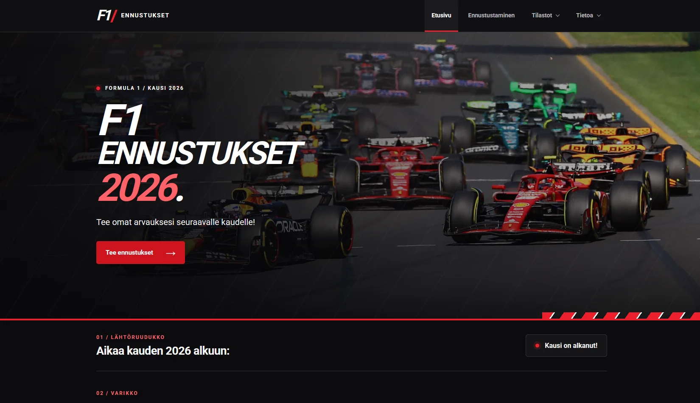
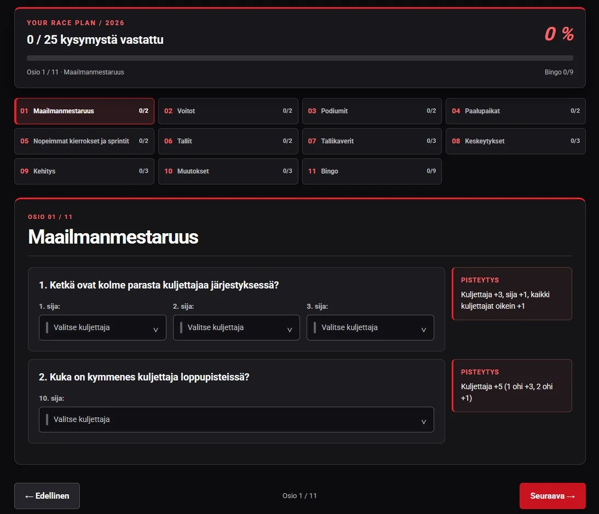

Problem Statement
The original format made it difficult to bring the prediction form, historical results and game statistics together in one place. I wanted an interface that players could navigate independently and return to throughout the season.
Personal project · 2025
Turning a family tradition into a digital experience
Formula 1 has been a shared interest in my family since 2012. In 2020, I turned our enthusiasm into a seasonal prediction game in PowerPoint. Five years later, I set out to bring that tradition to the web.


2025
Web Development
Personal project
Web Developer
The original format made it difficult to bring the prediction form, historical results and game statistics together in one place. I wanted an interface that players could navigate independently and return to throughout the season.
I independently designed and developed the website using HTML, CSS and JavaScript, organising the prediction process and historical information into a coherent web experience.
The website is built around a prediction form where players make their predictions for the next F1 season, such as championship standings, race winners and other key events. To help with the predictions, the site provides historical F1 data. Players can also look back at the statistics of previous games.
The project gave me practical experience in translating a familiar offline activity into a digital interface. User testing remains a next step; the current design has not yet been validated with players.